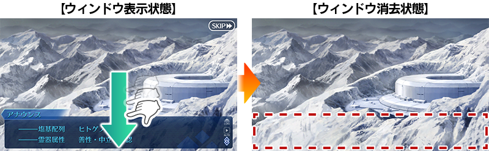
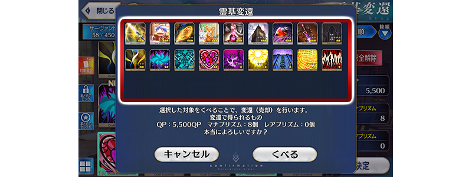
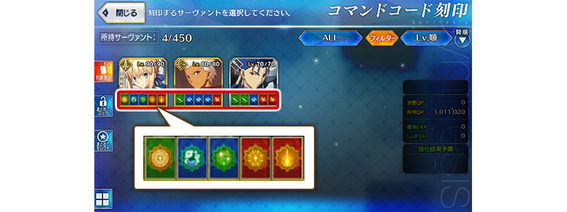
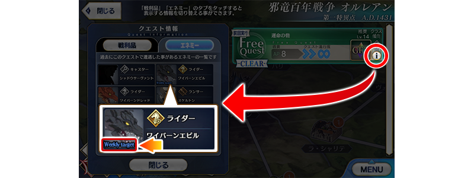

- 4/5
- 【來自迦勒底廣報局】關於4月的遊戲更新
非常感謝各位使用「Fate/Grand Order」。
來自迦勒底廣報局，告知關於預定2019年4月的下次遊戲更新。
以下介紹更新後反映的更新內容中，具有代表性的更新內容。
①訊息視窗消去功能追加
追加可消去文字冒險部份訊息視窗的功能。
在畫面下滑動的話，可消去訊息視窗看到角色的全身和背景全體。

※開發中畫面。
②靈基變還確認的一覧性提升 靈基變還時，增加在確認欄同時顯示的靈基數。

※開發中畫面。
③在戰鬥中的Servant詳細情報追加指令卡與指令紋章的情報 在戰鬥中的Servant詳細情報，變得可確認指令卡與指令紋章的情報。另外在狀態變化標籤變得可確認狀態變化的詳細。

※開發中畫面。
④在指令紋章刻印對象選擇畫面追加刻印狀態的顯示 在指令紋章刻印時的Servant選擇畫面，變得可確認指令紋章的刻印狀態。

※開發中畫面。
⑤表示做為敵人任務對象的圖示設計變更
在關卡情報的敵人一覧視窗中，以圖示顏色區分敵人做為撃破對象任務的分類，變更為以名稱區分。
「Weekly target」= 每週任務
「Special target」= 限定任務
「Event target」= 活動任務

※開發中畫面。
以上為預定2019年4月實施的下次遊戲更新主要內容。
另外今後，也預定在期間限定活動和期間限定宣傳活動中，會有將通過主線關卡設為開放條件的情況。
無論如何，如果推進主線關卡的攻略會有所幫助。
今後也請多多指教「Fate/Grand Order」。